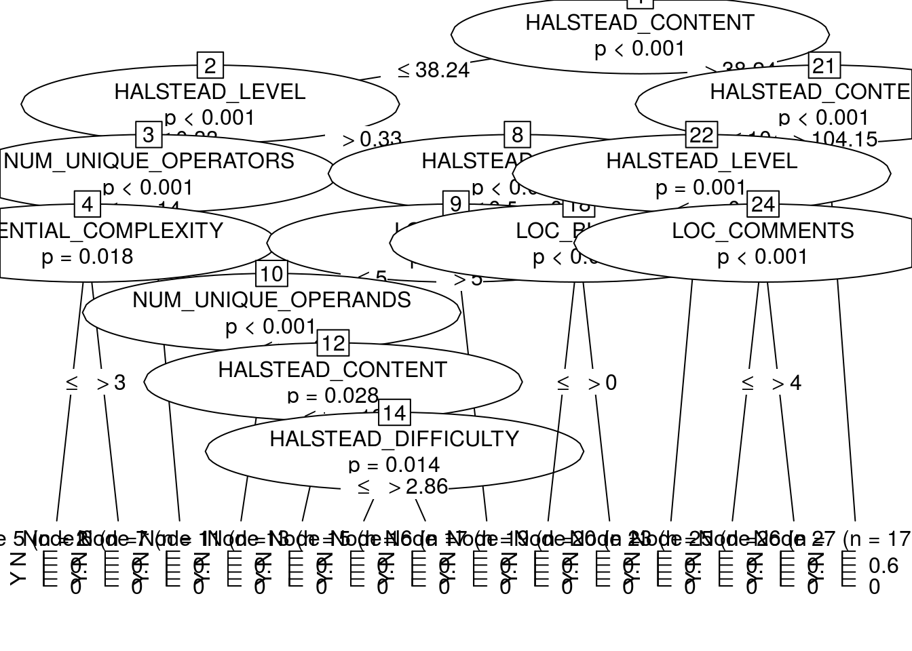
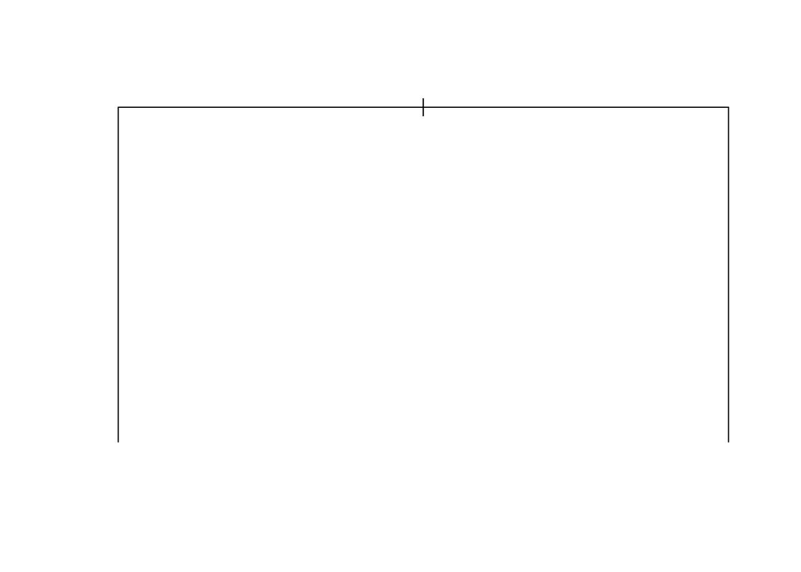
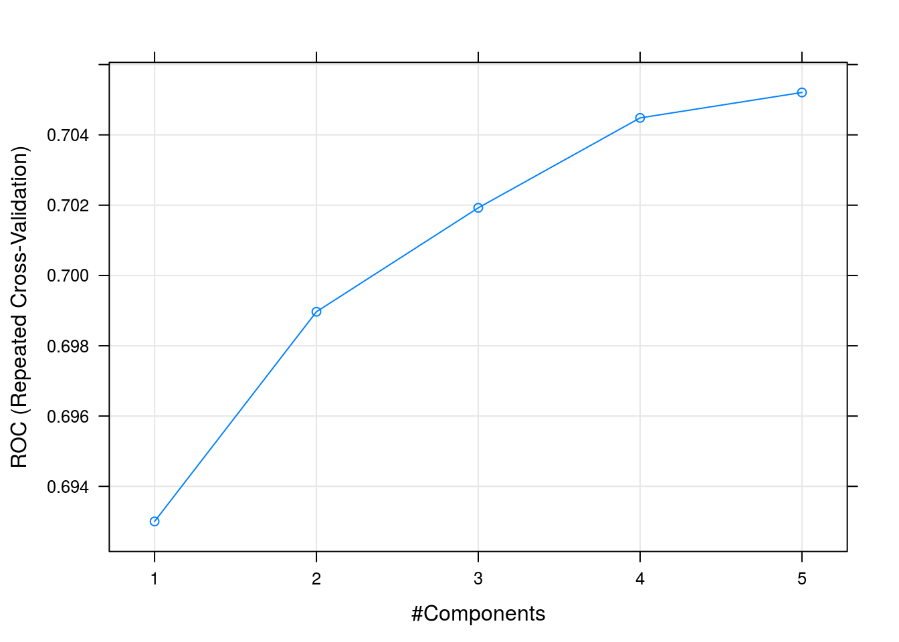
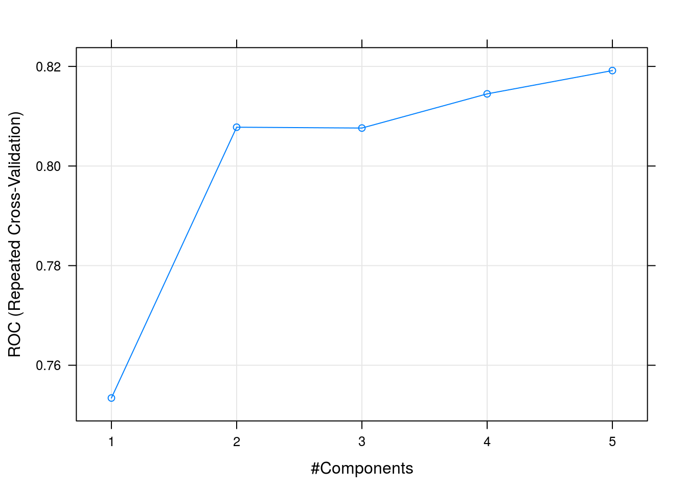

Chapter 6 Supervised Classification
A classification problem can be defined as the induction, from a dataset \(\cal D\), of a classification function \(\psi\) that, given the attribute vector of an instance/example, returns a class \({c}\). A regression problem, on the other hand, returns an numeric value.
Dataset, \(\cal D\), is typically composed of \(n\) attributes and a class attribute \(C\).
| \(Att_1\) | … | \(Att_n\) | \(Class\) |
|---|---|---|---|
| \(a_{11}\) | … | \(a_{1n}\) | \(c_1\) |
| \(a_{21}\) | … | \(a_{2n}\) | \(c_2\) |
| … | … | … | … |
| \(a_{m1}\) | … | \(a_{mn}\) | \(c_m\) |
Columns are usually called attributes or features. Typically, there is a class attribute, which can be numeric or discrete. When the class is numeric, it is a regression problem. With discrete values, we can talk about binary classification or multiclass (multinomial classification) when we have more than three values.
Supervised Classification
We have multiple types of models such as classification trees, rules, neural networks, and probabilistic classifiers that can be used to classify instances.
Fernandez et al provide an extensive comparison of 176 classifiers using the UCI dataset (Fernández-Delgado et al. 2014).
We will show the use of different classification techniques in the problem of defect prediction as running example. In this example,the different datasets are composed of classical metrics (Halstead or McCabe metrics) based on counts of operators/operands and like or object-oriented metrics (e.g. Chidamber and Kemerer) and the class attribute indicating whether the module or class was defective.
Most works in defect predicition have compare and analysed different classifiers with different datasets. Some relevant works include:
6.1 Classification Trees
There are several packages for inducing classification trees, for example with the party package (recursive partitioning):
library(foreign) # To load arff file
library(party) # Build a decision tree
library(caret)
kc1 <- read.arff("./datasets/defectPred/D1/KC1.arff")
str(kc1)## 'data.frame': 2096 obs. of 22 variables:
## $ LOC_BLANK : num 0 0 0 0 2 0 0 0 0 2 ...
## $ BRANCH_COUNT : num 1 1 1 1 1 1 1 1 1 1 ...
## $ LOC_CODE_AND_COMMENT : num 0 0 0 0 0 0 0 0 0 0 ...
## $ LOC_COMMENTS : num 0 0 0 0 0 0 0 0 0 0 ...
## $ CYCLOMATIC_COMPLEXITY: num 1 1 1 1 1 1 1 1 1 1 ...
## $ DESIGN_COMPLEXITY : num 1 1 1 1 1 1 1 1 1 1 ...
## $ ESSENTIAL_COMPLEXITY : num 1 1 1 1 1 1 1 1 1 1 ...
## $ LOC_EXECUTABLE : num 3 1 1 1 8 3 1 1 1 9 ...
## $ HALSTEAD_CONTENT : num 11.6 0 0 0 18 ...
## $ HALSTEAD_DIFFICULTY : num 2.67 0 0 0 3.5 2.67 0 0 0 3.75 ...
## $ HALSTEAD_EFFORT : num 82.3 0 0 0 220.9 ...
## $ HALSTEAD_ERROR_EST : num 0.01 0 0 0 0.02 0.01 0 0 0 0.04 ...
## $ HALSTEAD_LENGTH : num 11 1 1 1 19 11 1 1 1 29 ...
## $ HALSTEAD_LEVEL : num 0.38 0 0 0 0.29 0.38 0 0 0 0.27 ...
## $ HALSTEAD_PROG_TIME : num 4.57 0 0 0 12.27 ...
## $ HALSTEAD_VOLUME : num 30.9 0 0 0 63.1 ...
## $ NUM_OPERANDS : num 4 0 0 0 7 4 0 0 0 10 ...
## $ NUM_OPERATORS : num 7 1 1 1 12 7 1 1 1 19 ...
## $ NUM_UNIQUE_OPERANDS : num 3 0 0 0 5 3 0 0 0 8 ...
## $ NUM_UNIQUE_OPERATORS : num 4 1 1 1 5 4 1 1 1 6 ...
## $ LOC_TOTAL : num 5 3 3 3 12 5 3 3 3 13 ...
## $ Defective : Factor w/ 2 levels "N","Y": 1 1 1 1 1 1 1 1 1 1 ...# Stratified partition (training and test sets)
set.seed(1234)
inTrain <- createDataPartition(y=kc1$Defective,p=.60,list=FALSE)
kc1.train <- kc1[inTrain,]
kc1.test <- kc1[-inTrain,]
kc1.formula <- kc1$Defective ~ . # formula approach: defect as dependent variable and the rest as independent variables
kc1.ctree <- ctree(kc1.formula, data = kc1.train)
# predict on test data
pred <- predict(kc1.ctree, newdata = kc1.test)
# check prediction result
table(pred, kc1.test$Defective)##
## pred N Y
## N 708 130
## Y 0 0plot(kc1.ctree)
Using the C50 package, there are two ways, specifying train and testing
library(C50)
c50t <- C5.0(kc1.train[,-ncol(kc1.train)], kc1.train[,ncol(kc1.train)])
summary(c50t)
plot(c50t)
# c50tPred <- predict.C5.0(c50t, kc1.train)
# table(c50tPred, kc1.train$Defective)or using the formula approach:
# Using the formula notation
# c50t2 <- C5.0(Defective ~ ., kc1.train)
# c50tPred2 <- predict(c50t2, kc1.train)
# table(c50tPred2, kc1.train$Defective)Using the ‘rpart’ package
# Using the 'rpart' package
library(rpart)
kc1.rpart <- rpart(Defective ~ ., data=kc1.train)
plot(kc1.rpart)
library(rpart.plot)
#asRules(kc1.rpart)
#fancyRpartPlot(kc1.rpart)6.2 Rules
C5 Rules
library(C50)
c50r <- C5.0(kc1.train[,-ncol(kc1.train)], kc1.train[,ncol(kc1.train)], rules = TRUE)
summary(c50r)##
## Call:
## C5.0.default(x = kc1.train[, -ncol(kc1.train)], y =
## kc1.train[, ncol(kc1.train)], rules = TRUE)
##
##
## C5.0 [Release 2.07 GPL Edition] Fri Jun 30 09:26:09 2017
## -------------------------------
##
## Class specified by attribute `outcome'
##
## Read 1258 cases (22 attributes) from undefined.data
##
## Rules:
##
## Rule 1: (1173/142, lift 1.0)
## NUM_OPERANDS <= 67
## -> class N [0.878]
##
## Rule 2: (7, lift 5.7)
## LOC_COMMENTS <= 0
## DESIGN_COMPLEXITY > 2
## DESIGN_COMPLEXITY <= 4
## HALSTEAD_DIFFICULTY > 10.6
## NUM_UNIQUE_OPERATORS <= 12
## LOC_TOTAL <= 37
## -> class Y [0.889]
##
## Rule 3: (7, lift 5.7)
## DESIGN_COMPLEXITY > 4
## LOC_EXECUTABLE <= 47
## NUM_OPERANDS > 50
## NUM_UNIQUE_OPERATORS <= 17
## -> class Y [0.889]
##
## Rule 4: (15/1, lift 5.7)
## LOC_CODE_AND_COMMENT <= 0
## LOC_EXECUTABLE <= 47
## HALSTEAD_LEVEL > 0.04
## NUM_UNIQUE_OPERATORS > 17
## -> class Y [0.882]
##
## Rule 5: (85/32, lift 4.0)
## NUM_OPERANDS > 67
## -> class Y [0.621]
##
## Default class: N
##
##
## Evaluation on training data (1258 cases):
##
## Rules
## ----------------
## No Errors
##
## 5 149(11.8%) <<
##
##
## (a) (b) <-classified as
## ---- ----
## 1030 33 (a): class N
## 116 79 (b): class Y
##
##
## Attribute usage:
##
## 100.00% NUM_OPERANDS
## 2.31% NUM_UNIQUE_OPERATORS
## 1.75% LOC_EXECUTABLE
## 1.19% LOC_CODE_AND_COMMENT
## 1.19% HALSTEAD_LEVEL
## 1.11% DESIGN_COMPLEXITY
## 0.56% LOC_COMMENTS
## 0.56% HALSTEAD_DIFFICULTY
## 0.56% LOC_TOTAL
##
##
## Time: 0.0 secs# c50rPred <- predict(c50r, kc1.train)
# table(c50rPred, kc1.train$Defective)6.3 Distanced-based Methods
In this case, there is no model as such. Given a new instance to classify, this approach finds the closest \(k\)-neighbours to the given instance.
 (Source: Wikipedia - https://en.wikipedia.org/wiki/K-nearest_neighbors_algorithm)
(Source: Wikipedia - https://en.wikipedia.org/wiki/K-nearest_neighbors_algorithm)
library(class)
ind <- sample(2, nrow(iris), replace=T, prob=c(0.7, 0.3))
kc1.train <- kc1[ind==1, ]
kc1.test <- kc1[ind==2, ]
m1 <- knn(train=kc1.train[,-22], test=kc1.test[,-22], cl=kc1.train[,22], k=3)
table(kc1.test[,22],m1)## m1
## N Y
## N 449 28
## Y 63 196.4 Neural Networks
Neural Networks

Neural Networks
6.5 Support Vector Machine
(Source: wikipedia https://en.wikipedia.org/wiki/Support_vector_machine)
6.6 Probabilistic Methods
6.6.1 Naive Bayes
Probabilistic graphical model assigning a probability to each possible outcome \(p(C_k, x_1,\ldots,x_n)\)
Naive Bayes
Using the klaR package with caret:
library(caret)
library(klaR)## Loading required package: MASSmodel <- NaiveBayes(Defective ~ ., data = kc1.train)
predictions <- predict(model, kc1.test[,-22])
confusionMatrix(predictions$class, kc1.test$Defective)## Confusion Matrix and Statistics
##
## Reference
## Prediction N Y
## N 428 57
## Y 49 25
##
## Accuracy : 0.8104
## 95% CI : (0.7754, 0.8421)
## No Information Rate : 0.8533
## P-Value [Acc > NIR] : 0.9977
##
## Kappa : 0.2107
## Mcnemar's Test P-Value : 0.4966
##
## Sensitivity : 0.8973
## Specificity : 0.3049
## Pos Pred Value : 0.8825
## Neg Pred Value : 0.3378
## Prevalence : 0.8533
## Detection Rate : 0.7657
## Detection Prevalence : 0.8676
## Balanced Accuracy : 0.6011
##
## 'Positive' Class : N
## Using the e1071 package:
library (e1071)
n1 <-naiveBayes(kc1.train$Defective ~ ., data=kc1.train)
# Show first 3 results using 'class'
head(predict(n1,kc1.test, type = c("class")),3) # class by default## [1] N N N
## Levels: N Y# Show first 3 results using 'raw'
head(predict(n1,kc1.test, type = c("raw")),3)## N Y
## [1,] 1 2.623259e-09
## [2,] 1 2.623259e-09
## [3,] 1 6.435114e-09There are other variants such as TAN and KDB that do not assume the independece condition allowin us more complex structures.
Naive Bayes
Naive Bayes
A comprehensice comparison of
6.7 Linear Discriminant Analysis (LDA)
One classical approach to classification is Linear Discriminant Analysis (LDA), a generalization of Fisher’s linear discriminant, as a method used to find a linear combination of features to separate two or more classes.
ldaModel <- train (Defective ~ ., data=kc1.train, method="lda", preProc=c("center","scale"))
ldaModel## Linear Discriminant Analysis
##
## 1537 samples
## 21 predictors
## 2 classes: 'N', 'Y'
##
## Pre-processing: centered (21), scaled (21)
## Resampling: Bootstrapped (25 reps)
## Summary of sample sizes: 1537, 1537, 1537, 1537, 1537, 1537, ...
## Resampling results:
##
## Accuracy Kappa
## 0.8551284 0.3280731We can observe that we are training our model using Defective ~ . as a formula were Defective is the class variable separed by ~ and the ´.´ means the rest of the variables. Also, we are using a filter for the training data to (preProc) to center and scale.
Also, as stated in the documentation about the train method : > http://topepo.github.io/caret/training.html
ctrl <- trainControl(method = "repeatedcv",repeats=3)
ldaModel <- train (Defective ~ ., data=kc1.train, method="lda", trControl=ctrl, preProc=c("center","scale"))
ldaModel## Linear Discriminant Analysis
##
## 1537 samples
## 21 predictors
## 2 classes: 'N', 'Y'
##
## Pre-processing: centered (21), scaled (21)
## Resampling: Cross-Validated (10 fold, repeated 3 times)
## Summary of sample sizes: 1384, 1384, 1382, 1383, 1383, 1383, ...
## Resampling results:
##
## Accuracy Kappa
## 0.8594727 0.3551627Instead of accuracy we can activate other metrics using summaryFunction=twoClassSummary such as ROC, sensitivity and specificity. To do so, we also need to speficy classProbs=TRUE.
ctrl <- trainControl(method = "repeatedcv",repeats=3, classProbs=TRUE, summaryFunction=twoClassSummary)
ldaModel3xcv10 <- train (Defective ~ ., data=kc1.train, method="lda", trControl=ctrl, preProc=c("center","scale"))
ldaModel3xcv10## Linear Discriminant Analysis
##
## 1537 samples
## 21 predictors
## 2 classes: 'N', 'Y'
##
## Pre-processing: centered (21), scaled (21)
## Resampling: Cross-Validated (10 fold, repeated 3 times)
## Summary of sample sizes: 1384, 1384, 1383, 1383, 1382, 1384, ...
## Resampling results:
##
## ROC Sens Spec
## 0.8062856 0.9585212 0.3349444Most methods have parameters that need to be optimised and that is one of the
plsFit3x10cv <- train (Defective ~ ., data=kc1.train, method="pls", trControl=trainControl(classProbs=TRUE), metric="ROC", preProc=c("center","scale"))
plsFit3x10cv## Partial Least Squares
##
## 1537 samples
## 21 predictors
## 2 classes: 'N', 'Y'
##
## Pre-processing: centered (21), scaled (21)
## Resampling: Bootstrapped (25 reps)
## Summary of sample sizes: 1537, 1537, 1537, 1537, 1537, 1537, ...
## Resampling results across tuning parameters:
##
## ncomp Accuracy Kappa
## 1 0.8448983 0.1507835
## 2 0.8572696 0.2578249
## 3 0.8600026 0.2810041
##
## Accuracy was used to select the optimal model using the largest value.
## The final value used for the model was ncomp = 3.plot(plsFit3x10cv)
The parameter tuneLength allow us to specify the number values per parameter to consider.
plsFit3x10cv <- train (Defective ~ ., data=kc1.train, method="pls", trControl=ctrl, metric="ROC", tuneLength=5, preProc=c("center","scale"))
plsFit3x10cv## Partial Least Squares
##
## 1537 samples
## 21 predictors
## 2 classes: 'N', 'Y'
##
## Pre-processing: centered (21), scaled (21)
## Resampling: Cross-Validated (10 fold, repeated 3 times)
## Summary of sample sizes: 1384, 1383, 1383, 1383, 1383, 1384, ...
## Resampling results across tuning parameters:
##
## ncomp ROC Sens Spec
## 1 0.8035487 0.9812085 0.1250000
## 2 0.8134917 0.9829934 0.2100556
## 3 0.8086396 0.9835142 0.2266667
## 4 0.8058229 0.9837806 0.2281111
## 5 0.8070816 0.9827430 0.2198333
##
## ROC was used to select the optimal model using the largest value.
## The final value used for the model was ncomp = 2.plot(plsFit3x10cv)
Finally to predict new cases, caret will use the best classfier obtained for prediction.
plsProbs <- predict(plsFit3x10cv, newdata = kc1.test, type = "prob")plsClasses <- predict(plsFit3x10cv, newdata = kc1.test, type = "raw")
confusionMatrix(data=plsClasses,kc1.test$Defective)## Confusion Matrix and Statistics
##
## Reference
## Prediction N Y
## N 463 72
## Y 14 10
##
## Accuracy : 0.8462
## 95% CI : (0.8135, 0.8751)
## No Information Rate : 0.8533
## P-Value [Acc > NIR] : 0.7081
##
## Kappa : 0.131
## Mcnemar's Test P-Value : 7.923e-10
##
## Sensitivity : 0.9706
## Specificity : 0.1220
## Pos Pred Value : 0.8654
## Neg Pred Value : 0.4167
## Prevalence : 0.8533
## Detection Rate : 0.8283
## Detection Prevalence : 0.9571
## Balanced Accuracy : 0.5463
##
## 'Positive' Class : N
## 6.7.1 Predicting the number of defects (numerical class)
From the Bug Predictiono Repository http://bug.inf.usi.ch/download.php
Some datasets contain CK and other 11 object oriented metrics for the last version of the system plus categorized (with severity and priority) post-release defects. Using such dataset:
jdt <- read.csv("./datasets/defectPred/BPD/single-version-ck-oo-EclipseJDTCore.csv", sep=";")
# We just use the number of bugs, so we removed others
jdt$classname <- NULL
jdt$nonTrivialBugs <- NULL
jdt$majorBugs <- NULL
jdt$minorBugs <- NULL
jdt$criticalBugs <- NULL
jdt$highPriorityBugs <- NULL
jdt$X <- NULL
# Caret
library(caret)
# Split data into training and test datasets
set.seed(1)
inTrain <- createDataPartition(y=jdt$bugs,p=.8,list=FALSE)
jdt.train <- jdt[inTrain,]
jdt.test <- jdt[-inTrain,]ctrl <- trainControl(method = "repeatedcv",repeats=3)
glmModel <- train (bugs ~ ., data=jdt.train, method="glm", trControl=ctrl, preProc=c("center","scale"))
glmModel## Generalized Linear Model
##
## 798 samples
## 17 predictors
##
## Pre-processing: centered (17), scaled (17)
## Resampling: Cross-Validated (10 fold, repeated 3 times)
## Summary of sample sizes: 718, 718, 718, 718, 719, 718, ...
## Resampling results:
##
## RMSE Rsquared
## 0.8411011 0.3855316Others such as Elasticnet:
glmnetModel <- train (bugs ~ ., data=jdt.train, method="glmnet", trControl=ctrl, preProc=c("center","scale"))## Loading required package: glmnet## Loading required package: Matrix## Loading required package: foreach## Loaded glmnet 2.0-10glmnetModel## glmnet
##
## 798 samples
## 17 predictors
##
## Pre-processing: centered (17), scaled (17)
## Resampling: Cross-Validated (10 fold, repeated 3 times)
## Summary of sample sizes: 718, 718, 718, 718, 718, 718, ...
## Resampling results across tuning parameters:
##
## alpha lambda RMSE Rsquared
## 0.10 0.001202348 0.8127568 0.3411090
## 0.10 0.012023480 0.8183111 0.3344713
## 0.10 0.120234797 0.8077544 0.3396316
## 0.55 0.001202348 0.8119513 0.3412175
## 0.55 0.012023480 0.8227484 0.3268770
## 0.55 0.120234797 0.8117291 0.3473930
## 1.00 0.001202348 0.8116078 0.3407650
## 1.00 0.012023480 0.8189354 0.3309040
## 1.00 0.120234797 0.8167381 0.3445179
##
## RMSE was used to select the optimal model using the smallest value.
## The final values used for the model were alpha = 0.1 and lambda
## = 0.1202348.6.8 Binary Logistic Regression (BLR)
Binary Logistic Regression (BLR) can models fault-proneness as follows
\[fp(X) = \frac{e^{logit()}}{1 + e^{logit(X)}}\]
where the simplest form for logit is:
\(logit(X) = c_{0} + c_{1}X\)
jdt <- read.csv("./datasets/defectPred/BPD/single-version-ck-oo-EclipseJDTCore.csv", sep=";")
# Caret
library(caret)
# Convert the response variable into a boolean variable (0/1)
jdt$bugs[jdt$bugs>=1]<-1
cbo <- jdt$cbo
bugs <- jdt$bugs
# Split data into training and test datasets
jdt2 = data.frame(cbo, bugs)
inTrain <- createDataPartition(y=jdt2$bugs,p=.8,list=FALSE)
jdtTrain <- jdt2[inTrain,]
jdtTest <- jdt2[-inTrain,]BLR models fault-proneness are as follows
\[fp(X) = \frac{e^{logit()}}{1 + e^{logit(X)}}\]
where the simplest form for logit is:
\(logit(X) = c_{0} + c_{1}X\)
# logit regression
# glmLogit <- train (bugs ~ ., data=jdt.train, method="glm", family=binomial(link = logit))
glmLogit <- glm (bugs ~ ., data=jdtTrain, family=binomial(link = logit))
summary(glmLogit)##
## Call:
## glm(formula = bugs ~ ., family = binomial(link = logit), data = jdtTrain)
##
## Deviance Residuals:
## Min 1Q Median 3Q Max
## -3.5734 -0.6125 -0.5378 -0.4968 2.0992
##
## Coefficients:
## Estimate Std. Error z value Pr(>|z|)
## (Intercept) -2.086378 0.134620 -15.498 < 2e-16 ***
## cbo 0.056462 0.007045 8.014 1.11e-15 ***
## ---
## Signif. codes: 0 '***' 0.001 '**' 0.01 '*' 0.05 '.' 0.1 ' ' 1
##
## (Dispersion parameter for binomial family taken to be 1)
##
## Null deviance: 831.84 on 797 degrees of freedom
## Residual deviance: 725.93 on 796 degrees of freedom
## AIC: 729.93
##
## Number of Fisher Scoring iterations: 5Predict a single point:
newData = data.frame(cbo = 3)
predict(glmLogit, newData, type = "response")## 1
## 0.1281974Draw the results, modified from: http://www.shizukalab.com/toolkits/plotting-logistic-regression-in-r
results <- predict(glmLogit, jdtTest, type = "response")
range(jdtTrain$cbo)## [1] 0 156range(results)## [1] 0.1104278 0.9840854plot(jdt2$cbo,jdt2$bugs)
curve(predict(glmLogit, data.frame(cbo=x), type = "response"),add=TRUE)
# points(jdtTrain$cbo,fitted(glmLogit))Another type of graph:
library(popbio)##
## Attaching package: 'popbio'## The following object is masked from 'package:caret':
##
## sensitivitylogi.hist.plot(jdt2$cbo,jdt2$bugs,boxp=FALSE,type="hist",col="gray")6.9 The caret package
There are hundreds of packages to perform classification task in R, but many of those can be used throught the ‘caret’ package which helps with many of the data mining process task as described next.
The [caret (Classification And REgression Training) package][http://topepo.github.io/caret/](http://topepo.github.io/caret/) provides a unified interface for modeling and prediction with around 150 different models with tools for:
+ data splitting
+ pre-processing
+ feature selection
+ model tuning using resampling
+ variable importance estimation, etc.Website: http://caret.r-forge.r-project.org
JSS Paper: www.jstatsoft.org/v28/i05/paper
Book: Applied Predictive Modeling
For example, using one of the NASA datasets used extensively in defect prediction:
library(caret)
library(foreign)
kc1 <- read.arff("./datasets/defectPred/D1/KC1.arff")
str(kc1)## 'data.frame': 2096 obs. of 22 variables:
## $ LOC_BLANK : num 0 0 0 0 2 0 0 0 0 2 ...
## $ BRANCH_COUNT : num 1 1 1 1 1 1 1 1 1 1 ...
## $ LOC_CODE_AND_COMMENT : num 0 0 0 0 0 0 0 0 0 0 ...
## $ LOC_COMMENTS : num 0 0 0 0 0 0 0 0 0 0 ...
## $ CYCLOMATIC_COMPLEXITY: num 1 1 1 1 1 1 1 1 1 1 ...
## $ DESIGN_COMPLEXITY : num 1 1 1 1 1 1 1 1 1 1 ...
## $ ESSENTIAL_COMPLEXITY : num 1 1 1 1 1 1 1 1 1 1 ...
## $ LOC_EXECUTABLE : num 3 1 1 1 8 3 1 1 1 9 ...
## $ HALSTEAD_CONTENT : num 11.6 0 0 0 18 ...
## $ HALSTEAD_DIFFICULTY : num 2.67 0 0 0 3.5 2.67 0 0 0 3.75 ...
## $ HALSTEAD_EFFORT : num 82.3 0 0 0 220.9 ...
## $ HALSTEAD_ERROR_EST : num 0.01 0 0 0 0.02 0.01 0 0 0 0.04 ...
## $ HALSTEAD_LENGTH : num 11 1 1 1 19 11 1 1 1 29 ...
## $ HALSTEAD_LEVEL : num 0.38 0 0 0 0.29 0.38 0 0 0 0.27 ...
## $ HALSTEAD_PROG_TIME : num 4.57 0 0 0 12.27 ...
## $ HALSTEAD_VOLUME : num 30.9 0 0 0 63.1 ...
## $ NUM_OPERANDS : num 4 0 0 0 7 4 0 0 0 10 ...
## $ NUM_OPERATORS : num 7 1 1 1 12 7 1 1 1 19 ...
## $ NUM_UNIQUE_OPERANDS : num 3 0 0 0 5 3 0 0 0 8 ...
## $ NUM_UNIQUE_OPERATORS : num 4 1 1 1 5 4 1 1 1 6 ...
## $ LOC_TOTAL : num 5 3 3 3 12 5 3 3 3 13 ...
## $ Defective : Factor w/ 2 levels "N","Y": 1 1 1 1 1 1 1 1 1 1 ...Then we need to divide the data into training and testing.
# Split data into training and test datasets
set.seed(1)
inTrain <- createDataPartition(y=kc1$Defective,p=.75,list=FALSE)
kc1.train <- kc1[inTrain,]
kc1.test <- kc1[-inTrain,]Another approach to dividing the data:
# Split data into training and test datasets
set.seed(1)
ind <- sample(2, nrow(kc1), replace = TRUE, prob = c(0.75, 0.25))
kc1.train <- kc1[ind==1, ]
kc1.test <- kc1[ind==2, ]6.10 Ensembles
Ensembles or meta-learners combine multiple models to obtain better predictions. They are typically classified as Bagging, Boosting and Stacking (Stacked generalization).
Bagging (Breiman 1996) (also known as Bootstrap aggregating) is an ensemble technique in which a base learner is applied to multiple equal size datasets created from the original data using bootstraping. Predictions are based on voting of the individual predictions. An advantage of bagging is that it does not require any modification to the learning algorithm and takes advantage of the instability of the base classifier to create diversity among individual ensembles so that individual members of the ensemble perform well in different regions of the data. Bagging does not perform well with classifiers if their output is robust to perturbation of the data such as nearest-neighbour (NN) classifiers.
Boosting techniques generate multiple models that complement each other inducing models that improve regions of the data where previous induced models preformed poorly. This is achieved by increasing the weights of instances wrongly classified, so new learners focus on those instances. Finally, classification is based on a weighted voted among all members of the ensemble. In particular, AdaBoost (Adaptive Boosting) is a popular boosting algorithm for classification (Freund, Schapire, and Abe 1999). The set of training examples is assigned an equal weight at the beginning and the weight of instances is either increased or decreased depending on whether the learner classified that instance incorrectly or not. The following iterations focus on those instances with higher weights. AdaBoost can be applied to any base learner.
Stacking (Stacked generalisation) which combines different types of models
An very propular ensemble is Rotation Forests [40] combine randomly chosen subsets of attributes (random subspaces) and bagging approaches with principal components feature generation to construct an ensemble of decision trees. Principal Component Analysis is used as a feature selection technique combining subsets of attributes which are used with a bootstrapped subset of the training data by the base classifier.
# Load library
library(randomForest)
library(foreign) # To load arff file
#library(party) # Build a decision tree
#library(caret)
kc1 <- read.arff("./datasets/defectPred/D1/KC1.arff")
kc1.rf <- randomForest(kc1$Defective ~ . ,data = kc1, na.action=na.omit)
print(kc1.rf) ##
## Call:
## randomForest(formula = kc1$Defective ~ ., data = kc1, na.action = na.omit)
## Type of random forest: classification
## Number of trees: 500
## No. of variables tried at each split: 4
##
## OOB estimate of error rate: 13.74%
## Confusion matrix:
## N Y class.error
## N 1704 67 0.03783173
## Y 221 104 0.68000000plot(kc1.rf)A problem with ensembles is that their models are difficult to interpret (they behave as blackboxes) in comparison to decision trees or rules which provide an explanation of their decision making process.
References
Fernández-Delgado, Manuel, Eva Cernadas, Senén Barro, and Dinani Amorim. 2014. “Do We Need Hundreds of Classifiers to Solve Real World Classification Problems?” Journal of Machine Learning Research 15: 3133–81. http://jmlr.org/papers/v15/delgado14a.html.
Breiman, Leo. 1996. “Bagging Predictors.” Machine Learning 24 (2). Kluwer Academic Publishers: 123–40. doi:10.1007/BF00058655.
Freund, Yoav, Robert Schapire, and Naoki Abe. 1999. “A Short Introduction to Boosting.” Journal-Japanese Society For Artificial Intelligence 14 (771-780). JAPANESE SOC ARTIFICIAL INTELL: 1612.